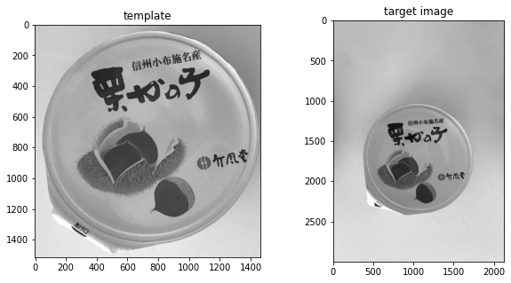
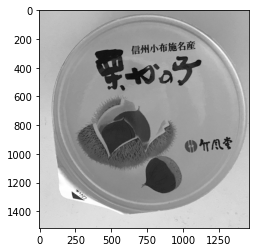

本記事はQrunchからの転載です。
カメラを固定しておいて、何らかの被写体を取り続けるということはよくある問題設定です。 ただし、被写体の位置が毎回少しズレるということも多々あります。 そんなときにテンプレートマッチングを使うことができます。
テンプレートマッチングについて
テンプレートマッチングではテンプレート画像と呼ばれるものを事前に用意しておきます。 そして、検出したいものが写っている画像の左上の領域から順にテンプレート画像とどれくらい似ているかを計算していきます。 このようにして、テンプレート画像とよく似た領域を検出するというのがテンプレートマッチングです。
OpenCVでテンプレートマッチング
次の左の画像をテンプレート画像として、右から同じ物体を検出してみます。

テンプレートマッチングは次のようにしておこなえます。
res = cv2.matchTemplate(img, template, cv2.TM_CCORR_NORMED)
cv2.TM_CCORR_NORMEDは類似度の計算の方法です。 選択肢は複数あり、手法によって精度と計算時間が変わります。 詳細はこちらをご確認ください。
返り値には各位置での類似度が格納されています。

TM_CCORR_NORMEDの場合には大きな値ほど、似ていますので明るい部分がもっともテンプレートとマッチしたことをあらわします。
この部分の画像を次のように切り抜いてみます。
_, max_val, _, max_loc = cv2.minMaxLoc(res)
height, width = template.shape
plt.imshow(img[max_loc[1]: max_loc[1] + height,
max_loc[0]: max_loc[0] + width])
plt.show()
結果は以下のとおりです。
バッチリできていることがわかります。
